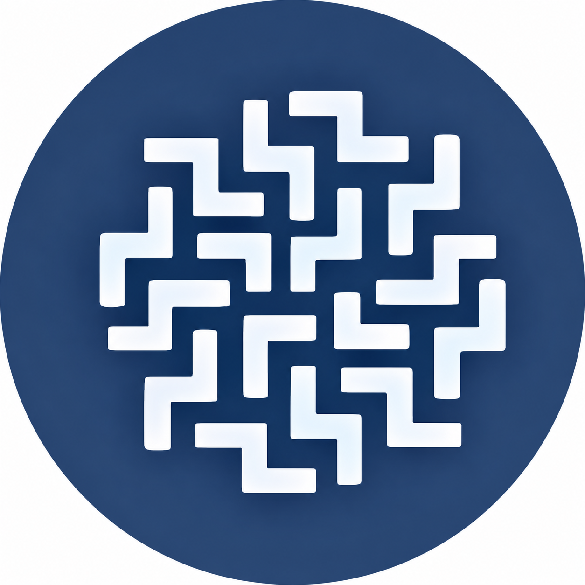

O que é a Liga?
A Liga Data Science é um projeto de extensão composto por alunos da UFPR.
Você conhece a
Um projeto de extensão composto por alunos da UFPR, movido pelo desafio de resolver problemas complexos e transformar dados em insights valiosos.

A partir de dados
surgem ideias
soluções
Somos movidos pelo desafio de resolver problemas complexos e transformar dados em insights valiosos.
A Liga Data Science é um projeto de extensão composto por alunos da UFPR.
Difundir o conhecimento em ciência de dados no ambiente universitário.